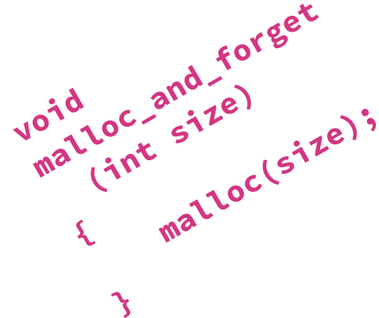

|  |
unutil.h
unutil.h is a small humorous endeavor together with college roommate Lucas Garron. It's what the name suggests: a file full of (mostly) useless functions, such as memdntcpy() (inspired by memcpy()), and itoi() and atoa() (inspired by atoi() and itoa()).
unutil.h was written in May 2013, and is located here.
|